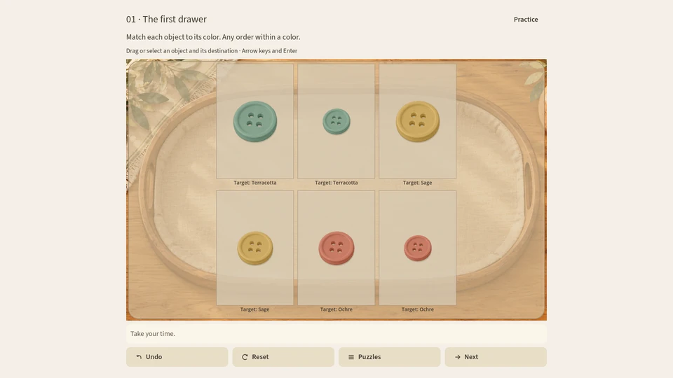
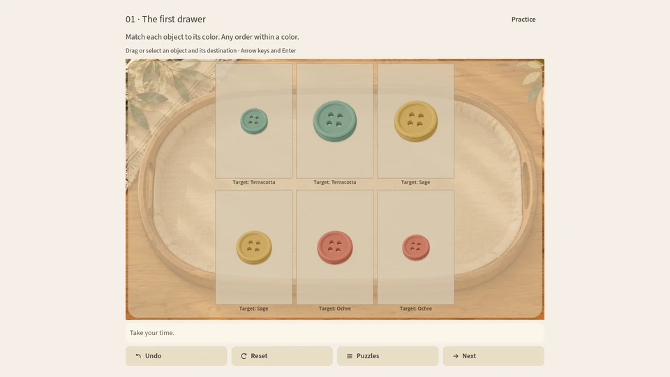
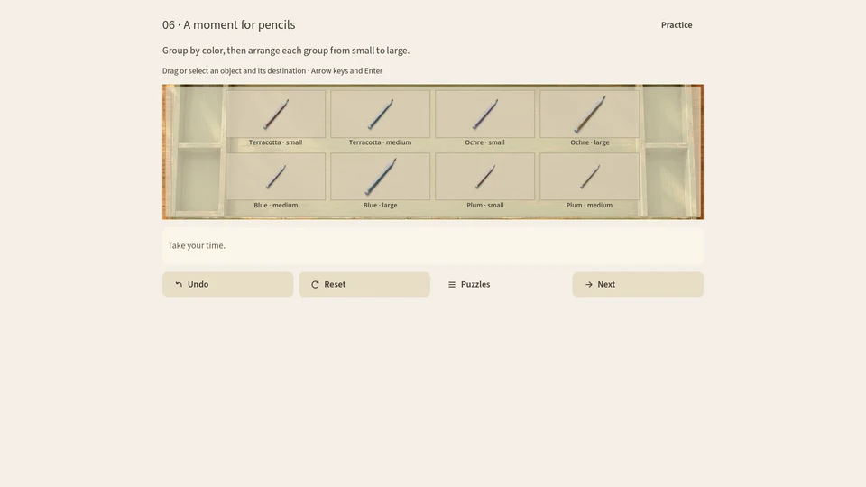
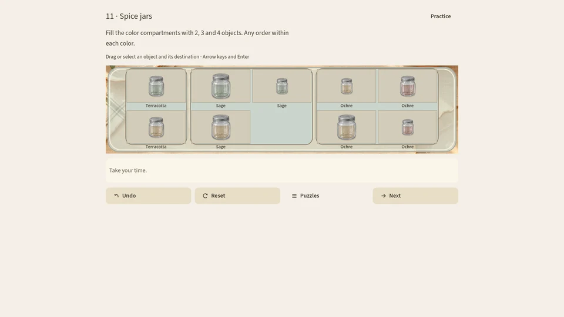
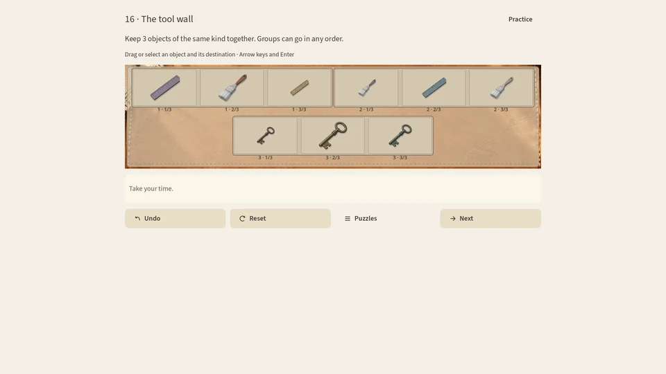
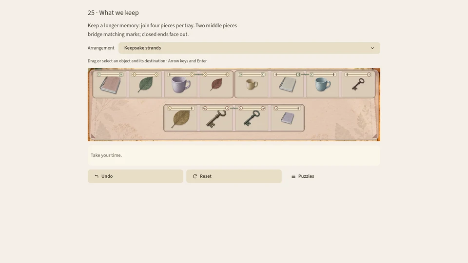

Sichtbare Regeln
Jede Aufgabe zeigt dir, worauf es ankommt. Entdecke die Ordnung Schritt für Schritt.
Ein Spiel zum Durchatmen
Ein ruhiges Sortierpuzzle mit 25 Aufgaben in fünf Kapiteln. Ordne kleine Fundstücke, folge sichtbaren Regeln und verbinde passende Fäden – ohne Timer.
Das Spiel entdecken
Jetzt im Microsoft Store · für Windows 10 oder neuer · 4,99 €
Das Spiel
Jede Aufgabe zeigt dir, worauf es ankommt. Entdecke die Ordnung Schritt für Schritt.
Manche Aufgaben haben mehrere Lösungen. Mit „Rückgängig“ kannst du jederzeit einen Zug zurücknehmen.
Kein Timer: Nimm dir die Zeit, die du brauchst, und spiele mit Maus oder Touch.
Fünf Kapitel führen von Knöpfen und Stiften zu Erinnerungsstücken mit passenden Fäden.
Einblicke
Echte Spielaufnahmen aus allen fünf Kapiteln. Das erste Paar zeigt einen einzelnen Zug, keine fertige Lösung. Die Spieloberfläche ist auf Englisch.






FAQ
Little Keepings ist jetzt im Microsoft Store für Windows 10 oder neuer erhältlich, für 4,99 €.
Nein. Es gibt keinen Timer. Du kannst in deinem eigenen Tempo spielen und Züge rückgängig machen.
Auf deinem Gerät. Mehr dazu steht in unserer Datenschutzerklärung.
Jetzt im Microsoft Store für Windows.

Weiterlesen
Sortierspiel ohne Zeitdruck · Sortierspiel für Windows ohne Werbung · Aufräumspiel zum Entspannen